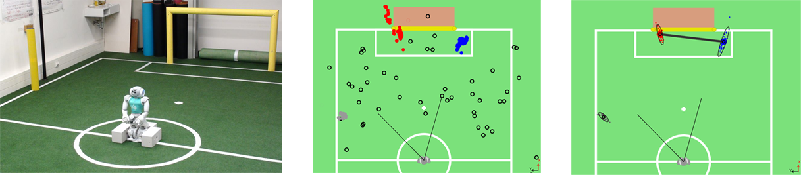

Modeling
In order to realize a complex and successful cooperative behavior it is necessary to have a appropriate model of the surrounding world. In our approach we focus on local models of particular aspect
Camera Matrix Calibration
Camera matrix is the coordinate transformation of a camera in relation to the local coordinate system of the robot. The camera matrix is used to establish the relation between objects detected in the image and their position relative to the robot. For instance, the center of the detected ball in the image can be projected on the ground plane and so the distance to the actual ball can be estimated. In a certain way, the camera matrix stands between the basic perception and the model of the situation affecting directly the quality of self localization, ball model and such. Thus, an accurate estimation of the camera matrix is crucial for the robot's perception of its environment.
One way to estimate the camera matrix is the usage of the kinematic chain in combination with the accelerometer and gyrometer to estimate the rotation. This approach, however, can yield substantial errors, as the parameters of the kinematic chain differ between the robots due to differences in manufacturing and the effect of wearing out over time. In particular the following 11 joints have been observed developing major offsets: (body rotation pitch/roll, head rotation pitch/roll/yaw, top/bottom camera rotation pitch/roll/yaw).
In order to compensate for these errors we apply calibration offsets to these joints. To calculate the offsets we utilize the line percepts, which are provided by the LineGraphProvider described in section LineGraphProider. The basic approach is to place the robot at a known position on the field and allow it to collect a set of line perceptions by looking around. Detected line perceptions in the image are projected on the ground plane using the camera matrix. The projected results are compared with the actual lines on the field. The resulting error can be minimized by adjusting the aforementioned offsets. It can be choosen between a simple Gauss-Newton and two Levenberg-Marquardt implementations as minimization algorithm. The current implementation supports a manual and automatic mode for the calibration procedure. The figure below illustrates the projection of the collected line perceptions before (left) and after (right) the minimization procedure.

Probabilistic Compass
We estimate the orientation of the robot on the field based on the detected line edgels utilizing the fact, that all field lines are either orthogonal or parallel to the field. Based on the orientations of the particular projected edgels it is possible to estimate the rotation of the robot up to the \(\pi\) symmetry.
We calculate the kernel histogram over the orientations of the particular projected edgels, i.e., edgels in the local coordinates of the robot. To utilize the symmetry of the lines we use \(\sin\) as distance measure. Let \((x_i)_{i=1}^n\) be the set of edgel orientations. We calculate the likelihood \(S(x)\) for the robot rotation \(x\in[-\pi,\pi)\) as shown in the equation below.
This compass is calculated in each frame where enough edgels have been detected. It has shown to be robust regarding outliers, e. g., when some edgels are detected in a robot. It can be directly used to update the likelihood of particles in the selflocator. Figure 5.4 shows a set of edgels detected in a particular frame on the left side. On the right side the according histogram is plotted.

Multi-Hypothesis-Extended-Kalman-Filter Ball Model
Although there is usually only one ball involved in a RoboCup game, there are several good reasons for being able to represent and track several ball hypotheses at the same time. The main reason however are the false-positives. Due to the change to the new black and white ball as described in the Section~\ref{s:ball_detection}, the chance of a false positive became much higher. The most of the false detections appear only sporadically and do not persist over long time. Tracking several possible balls at the same time allows to effectively separate the true (persistent) detections from the false (sporadic) ones.
Each candidate (hypothesis) is tracked by an Extended Kalman filter. The Extended Kalman filter is used with linear state transition model and a nonlinear observation model. The state is defined as the location and velocity of the ball in the robot's local Cartesian coordinates while the measurement is taken as the vertical and horizontal angle in the camera image.
At first all hypotheses (ball candidates) are removed and not considered in the following steps which weren't updated for an amount of time and theirs variance in location became too high. Then the odometry of the robot since the last update is applied transparently to the states and covariances of the Extended Kalman filters so they stay in the robot's local coordinate system. Next, the current position and velocity of the ball candidates are calculated according to the linear state transition model. The friction between ball and carpet is modeled as negative acceleration in opposite direction to the current velocity and incorporated into the linear state transition model as a control vector. After that the ball candidates in the image are assigned to the hypotheses and the update is performed. Each measurement is assigned at most to one hypothesis and vice versa. If no matching hypothesis is found a new Kalman filter is created which will represent a new hypothesis. The final ball model for the behavior is the hypothesis which is the closest to the robot and is updated frequently.
Multi-Hypothesis Goal Model (MHGM)
In this section we describe a multi-hypothesis approach for modeling a soccer goal within the RoboCup context.
The whole goal is rarely observed and we assume the image processing to detect separate goal posts. So we represent the goal by its corresponding posts. To reduce complexity of the shape of uncertainty we model the separate goal posts in local robot coordinates. The ambiguous goal posts are tracked by a multi-hypothesis particle filter. The actual goal model is extracted from the set of post hypotheses.
The joint uncertainty can be subdivided into noise, false detections and ambiguity. Each of these components is treated separately in our approach.
The multi-hypothesis filter has to take care of noise and false detections, but it does not resolve the ambiguity of the goal posts. Instead, all occurring goal posts are represented by corresponding hypotheses and the ambiguity is solved on the next level when the goal model is extracted.
Particle filters are great in filtering noise and are shown to be very effective for object tracking.
To deal with sparse false positives we introduce a delayed initialization procedure. We assume a false positive to result in an inconsistency, i.e., it cannot be confirmed by any existing goal post hypothesis. In this case the percept is stored in a short time buffer for later consideration. This buffer is checked for clusters, in case a significant cluster of goal post percepts accumulated during a short period of time, a new hypothesis is initialized based on this cluster.
The dense false detections result in post hypotheses, which is later ignored while extracting the goal.
More detailed description of the algorithm as well as the experimental results can be found in [@HSR-ScheunemannMellmann-14].

Simulation Based Selection of Actions
The robot is capable of different kicks and should given a particular situation, e.g., the robot's position, the position of the ball and obstacles, determine which kick is the optimal kick to perform in this situation. A naive geometric solution which selects a kick based on the robot's direction towards the opponent goal does not account for uncertainty of the actual execution of the kick. Furthermore the distance of the kick is not considered in this approach. An improved kick selection algorithm was developed which is based on a forward simulation of the actions. Thereby each possible kick is simulated and the best kick is chosen based on the outcome, i.e., the position of the ball after the kick. Uncertainty and additional constraints can be integrated in a straight forward way.
Definition of an Action
An Action is a set of parameters which describe a probability distribution of the possible ball location after the execution of a kick. Currently there are 4 kicks, two forward kicks and two sidekicks as well as the case of turning around the ball. The probability distribution is modeled as a Gaussian distribution. The parameters which describe the distribution for one action are velocity, angle and their standard deviations.

Determine the parameters
To calculate the initial velocity of a kick the distance the ball rolled after a kick was measured in an experiment. By using the stopping distance formula the initial velocity of one kick can be calculated by
where \(\upsilon\) is the initial velocity of the ball. \(c_R\) the rolling resistance coefficient and \(g\) the gravitational constant. The mean of \(\upsilon_0\) of multiple repetitions defines the initial velocity of this action. The standard deviation of the repetitions defines the standard deviation for the velocity of the kick. The parameter for angle is predefined for every action, e.g., it's zero for forward kicks and 90 degrees for left sidekick. The standard deviation for the angle is the standard deviation of the angle measurements from the previous experiment. The coefficient of friction is calibrated to a real surface from rolled distances of the ball rolling on this surface with a known initial velocity. For this, we performed multiple experiments with an inclined plane starting at different heights. From these heights we could determine the initial potential energy of the ball, which was converted to kinetic energy by rolling down the inclined plane. At the end of the inclined plane (not taking into account the friction of the inclined plane), the initial velocity of the ball could thus be determined. We then measured the distance in multiple experiments. By transposing the rolling distance formula the rolling resistance coefficient can be calculated.
where \(\upsilon_0\) is the starting velocity, \(g\) the gravitational constant, and \(d\) the total distance the ball traveled. The mean of the calculated coefficients is used as the rolling resistance coefficient for the other calculations. In the algorithm the position of the ball after the execution of an action is needed. To calculate this, the formula is transposed to calculate the distance the ball rolls after the execution of an action:
where \(\upsilon\) is the initial velocity of the ball. \(c_R\) the rolling resistance coefficient and \(g\) the gravitational constant. The above figure shows a resulting end position cloud of a hypothetical kick. The end points are calculated by drawing a sample from both the angle and kick speed distribution and plugging these values in the last equation. For details, refer to the next section.
The algorithm
The whole simulation is divided into three steps: simulate the consequences, evaluate the consequences and decide the best action.
Simulating the consequences
Each action is simulated a fixed number of times. The resulting ball position of one simulation for an action is referred to as particle. The positions of the particles are calculated according to the parameters of the action with applied standard deviations. The algorithm checks for possible collisions with the goal box and in case there are any the kick distance gets shortened appropriately. Collisions with the obstacle model are handled the same way.
Evaluation
Each particle is sorted in different categories based on where on the field it is, e.g., inside the field, inside the own Goal, outside the field. If a particle lands outside the field it is sorted in the category according where it went out, e.g., left sideline or opponent ground line. This is repeated for every particle of every Action that is defined. The algorithm then counts the number of particles of each action that is either inside the field or inside the opponent goal.
Decision
If an action has less than the defined threshold of particles either inside the field or inside the opponent goal the action is discarded. For the remaining actions the one with the most particles inside the opponent goal is calculated. If there are two actions with the most particles inside the goal the best action is determined by evaluating the particles of each actions with the potential field. The action with the smaller sum is selected. If at least one particle of an action is inside the own goal the action will not be chosen. If no action has a particle inside the opponent goal the potential field is used to rank the actions. In this case all particles from one action are evaluated by the potential field and the mean of these values is calculated. The action with the highest mean is selected and executed. If no action has enough good particles, the best action is to turn towards the opponent goal.

Potential field
A potential field assigns a value to each position of the ball inside the field. The values reflect the static strategy of the game and are used to compare possible ball positions in terms of their strategic value. For instance, the position a meter away in front of the opponent goal is obviously much better than the one in front of the own goal. In our experiments we use the following potential field:
where \(N(\cdot | \mu, \Sigma)\) is the normal distribution with mean \(\mu\) and covariance \(\Sigma\). It consists of three different parts: the linear slope points from the own goal towards the opponent goal and is modeling the general direction of attack; the exponential repulsor \(N(x | \mu_\text{own}, \Sigma_{\text{own}})\) prevents kicks towards the center in front of own goal; and \(N(x | \mu_\text{opp}, \Sigma_{\text{opp}})\) creates an exponential attractor towards the opponent goal. The configuration used in our experiments is \(\(\nu_\text{opp} = \left(-1/x_{\text{opp}}, 0\right)^T\)\) with \(x_{\text{opp}} = 4.5\) being the \(x\)-position of the opponent goal and
for the repulsor and attractor respectively. All parameters are of unit m. The resulting potential field is visualized below.

A more detailed description of this simulation can be found in @RCMellmannSchlotterBlum16. A continuation of this work was presented at the HUMANOIDS 2017 RoboCup Workshop @HSR-MellmannSchlotter-17.
Arm Collision Detection
In the current implementation of the stand and walk motions the arms are used for stability and energy efficiency. During the stand motion the arms are kept down along the sides to minimize energy consumption, and are moved back and forth during the walk to balance the rotational forces and stabilize the walk. On the downside, these arm poses effectively enlarge the frontal silhouette significantly increasing the chance of collision with other players or goal posts, which may destabilize the robot and lead to a fall or a penalty for illegal pushing.
The goal of collision detection is to recognize when robots arms collide with an external object. When a collision is detected, the robot reacts with an evasive movement by taking the arms back and so effectively minimizing its silhouette. This allows the robot to ``sneak'' through narrow spaces without falling or pushing others. The earlier a collision is recognized, the more effective will be the avoidance. However, a false detection will force the robot to take the arms back unnecessarily destabilizing it.
A collision with an arm can be identified by observing the difference in the planned joint position (MotorJointdata) and the measured joint position (SensorJointData) of the LShoulderPitch and RShoulderPitch joints. These joints have the largest leverage and are affected the most when a collision on an arm occurs.

In the current implementation we use a straight forward approach. A collision is detected when the moving average of the absolute error in the joint position rises above a fixed threshold. The moving average is calculated over a fixed window of 100 frames, i.e., 1 second. Note that there is a delay of 4 frames, i.e., 40 ms, between the joint position command and the corresponding measurement. This delay needs to be taken into account when calculating the error in the joint position. To determine the threshold a number of experiments with collisions was recorded. The threshold was calculated as a maximum of the moving average error over all experiments, with a bit of tolerance. Together with the delay induced by the moving average filter, this results in a conservative detector. The figure above shows the accumulated absolute error for both arms. During the experiment the robot goes from stand to walk and a collision occurs at the left arm. It can be clearly seen that the error for the left arm rises above the threshold (red line) when the collision occurs, while the error for the right arm (the arm without collision) stays well below the threshold during the entire time.
Despite its simplicity, this approach has shown good results during the RoboCup competition in 2017 and was able to recognize most of the collisions. In the current work we focus on a more sensitive and accurate detector. To avoid false detections, the static threshold has to be chosen larger than the largest expected error which might occur with out a collision. The accuracy can be improved with a dynamic threshold. We observed a correlation between the position of the joint the average absolute error which. Thus, a threshold depending on the position of the joint might improve the results significantly.
Time synchronization
The robots communicate via wifi with the gamecontroller and with each other. The communicated information are not only used for debugging & visualization in RobotControl, their're also used in the behavior and role decision of each player. Because of the different wifi conditions in the lab, during competitions and other events, the robots couldn't be very confident how reliable the provided information are. So far the robots couldn't determine, when the data was sent and therefore how old the received data really is. For this reason it was necessary to implement a synchronization primitive in order to account for the transmission latency, which could be as fast as 20ms, but also could took up to 1s. The idea of the time synchronization module is based on the "simple network time protocol", which is a simplified version of NTP. In contrast to the standard SNTP, we're using extra data fields in our teamcomm message, instead of a low level network format. Further we doesn't use a server, centralized software instance, instead the robots themselves deciding to which other robot they want to synchronize with and sending them the appropriate information. That results in a decentralized simple network time protocol. The whole process is based on timestamps in ms and works as follow:
-
a robot randomly selects a teammate he wants to synchronize with
-
he creates a ntp request which contains the player number of the synchronizing partner, the timestamp of the last message the partner send and the timestamp the robot received the last message.
-
after some time, the robot should get a similar request from its teammate and can calculate with the given information the total round-trip-time (RTT) and the latency for one direction
-
the fastest transmission cycle is then used to calculate the time offset between the robot and its teammate
-
the offset can then be used to provide an estimated time of the teammates for other modules
Together with the estimated time of the teammates and the timestamped message data, each robot is able to determine how "old" the received data of its teammates are. This synchronization primitive is not as accurate as the standard NTP, but it is reasonably good and much better than a manually chosen latency or no synchronization at all. Currently only the teamball module uses the time synchronization to determine how old a seen ball of its teammates really is, but future development should use the feature more and thus make the communicated information more reliable and the thereon based calculations more accurate.
IMU
A Unscented-Kalman-Filter is used to combine the measurements of the accelerometer and gyrometer to a orientation and a gravity adjusted acceleration in the inertial frame. Quaternions are used in calculations and the orientation is represented as a rotation vector (Euler vector) in the state of the Unscented-Kalman-Filter to improve the numerical stability and avoid the problem of singularities.